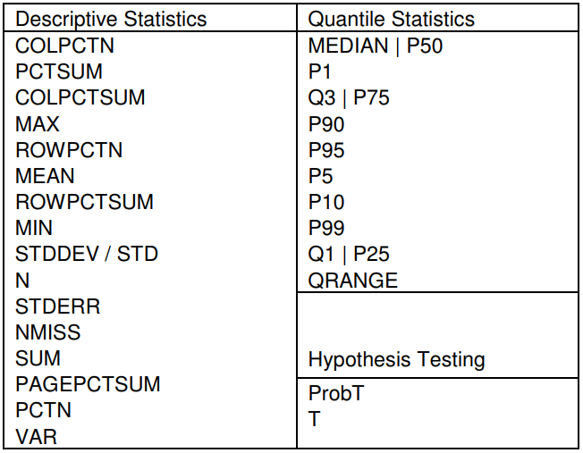
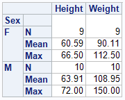
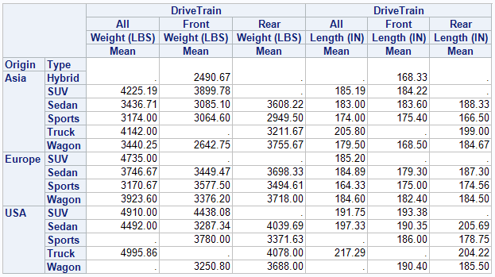
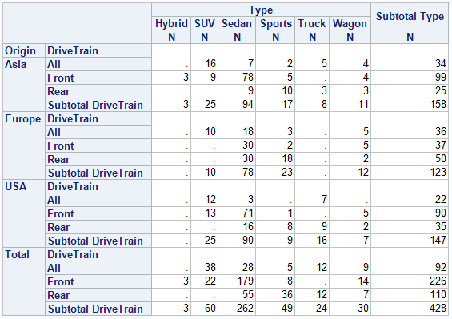
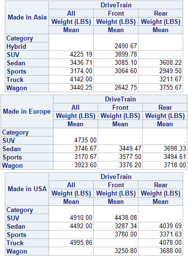
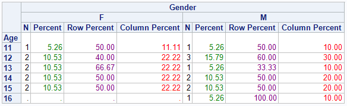
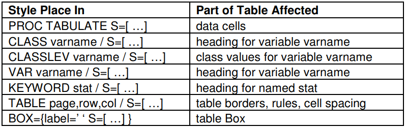

Reports
ODS¶
In order to produce outputs from SAS, the three more common ODS techniques, that produces different output files, are HTML, RTF, and PDF. Each ODS statement uses options that are specific to that destination. The ODS options (other than the FILE= option) used in the program are shown in the table below.
| RTF | HTML | |
|---|---|---|
BODYTITLE STARTPAGE=NO KEEPN NOTOC_DATA / TOC_DATA CONTENTS COLUMNS= TEXT= |
BOOKMARKGEN=NO STARTPAGE=NO COMPRESS=9 TEXT= |
STYLE=SASWEB RS=NONE |
For an explanation of the options, refer to this page or to the ODS User's Guide.
Set the SAS system options. The NODATE option suppresses the display of the date and time in the output. PAGENO= specifies the starting page number. LINESIZE= specifies the output line length, and PAGESIZE= specifies the number of lines on an output page.
1 | OPTIONS NODATE PAGENO=1 LINESIZE=80 PAGESIZE=40; |
PROC PRINT¶
PROC TABULATE¶
PROC TABULATE is a procedure that displays descriptive statistics in tabular format. It computes many statistics that other procedures compute, such as MEANS, FREQ, and REPORT and displays these statistics in a table format. TABULATE will produce tables in up to three dimensions and allows, within each dimension, multiple variables to be reported one after another hierarchically. There are also some very nice mechanisms that can be used to label and format the results.
1 2 3 4 5 6 | PROC TABULATE <options>; CLASS variables </ options>; VAR variables </ options>; TABLE <page>, <row>, column </ options>; ... other statements...; RUN; |
VARis used to list the variables you intend to use to create summary statistics on. They must be numeric.CLASSvariables allow you to get statistics by category. You will get one column/row for each value of the classification variable. You can also specify the universal CLASS variableALLwhich allows you to get totals. They can be either numeric or character and you can only request counts and percents as statistics. This is almost like using aBYstatement within theTABLE.TABLEconsists of up to three dimension expressions and the table options. You can have multiple table statements in onePROC TABULATE. This will generate one table for each statement.- A comma specifies to add a new dimension. The order of the dimensions is page, row and column. If you only specify one dimension, then it is assumed to be column. If two are specified, row, then column.
- The asterisk is used to produce a cross tabulation of one variable with another (within the same dimension however, different from
PROC FREQ). - A blank is used to represent concatenation (i.e. place this output element after the preceding variable listed).
- Parenthesis will group elements and associate an operator with each element in the group.
- Angle brackets specify a denominator definition for use in percentage calculations.
Check these websites
VARDEF=divisorspecifies the divisor to be used in the calculation of the variances. If divisor isDF(default), the degrees of freedom (N-1) are used as the divisor.ORDER=specifies the order of appearance in the table of theCLASSvariable levelsFORMATTED: ordered by the formatted valuesDATA: the order that the observations are read from the data setFREQ: order the values so the one that occurs most frequently in the data set appears firstINTERNAL: ordered by theSORTprocedure (defaults)
/CONDENSEprints multiple logical pages on a single physical page/PRINTMISSspecies that row and column headings are the same for all logical pages of the table/ROW = spacingspecifies whether all title elements in a row crossing are allotted space even when they are blank. WhenROW=CONSTANT(orCONST), the default, all row title elements have space allotted to them; whenROW=FLOAT, the row title space is divided equally among the nonblank title elements in the crossing
Available Statistics¶
If you do not provide a statistic name, the default statistic produced will be N for the CLASS variables and SUM for the VAR variables.

Single Dimensional Table¶
1 2 3 4 5 | PROC TABULATE DATA=sashelp.class;
CLASS Sex;
VAR Height Weight;
TABLE Height * (N MEAN) Height * MEAN * Sex Weight * MEAN * Sex;
RUN;
|

Two Dimensional Table¶
You can get very different table structures by changing where the statistic definitions are placed. They can be attached to either the VAR or the CLASS variable, but the numbers in the cells will always be calculated using the VAR variable(s).
The statistic specification can be attached to the columns,
1 2 3 4 5 | PROC TABULATE data=sashelp.class;
CLASS Sex;
VAR Height Weight;
TABLE Sex, Height * (N MEAN MAX) Weight * (N MEAN MAX) ;
RUN;
|
")
or they can be attached to the rows.
1 2 3 4 5 | PROC TABULATE data=sashelp.class;
CLASS Sex;
VAR Height Weight;
TABLE Sex * (N MEAN MAX), Height Weight;
RUN;
|

You can specify multiple classification variables. They can be used in any of the dimensions and can be nested. When you have multiple CLASS variables, it is recommended to use the option MISSING to keep the observations that have any missing values and consider them as valid levels for the CLASS variable(s) instead of dropping those observations from all the tables.
1 2 3 4 5 | PROC TABULATE DATA=sashelp.cars;
CLASS DriveTrain Origin Type / MISSING;
VAR Weight Length;
TABLE Origin * Type, DriveTrain * Weight * MEAN DriveTrain * Length * MEAN;
RUN;
|

In order to get marginal statistics in your table, you use the ALL keyword. You can use the keyword in multiple places and, depending on where you put the keyword, there will be different subtotals produced.
1 2 3 4 | PROC TABULATE DATA=sashelp.cars;
CLASS DriveTrain Origin Type;
TABLE (Origin All='Total') * (DriveTrain ALL='Subtotal DriveTrain'), (Type ALL='Subtotal Type'* N);
RUN;
|

Three Dimensional Table¶
Three dimensional tables have a nice way to fill in the upper left area. Instead of the label of the page dimension appearing above the table, you can use the BOX=_page_ option to place that label inside the big white box.
1 2 3 4 5 | PROC TABULATE data=sashelp.cars;
CLASS DriveTrain Origin Type;
VAR Weight Length;
TABLE Origin = 'Made in', Type = 'Category', DriveTrain * Weight * MEAN / BOX=_PAGE_;
RUN;
|

Formatting tables¶
There are two ways to add labels for your variables:
- Add the text after the variable name:
variable =‘label’. This will work for both variables and statistics. - Add a
LABELstatement for variables and/or aKEYLABELstatement for statistics to your code:
1 2 | LABEL var=‘label’; KEYLABEL stat=‘label’; |
In order to hide variable or statistic labels, you leave the label specification blank (variable =‘ ’).
To change the font color of each variable you can define their style as in the following example:
1 2 3 4 5 6 7 8 | PROC TABULATE DATA=sashelp.class;
CLASS Age Sex;
TABLES Age,
Sex='Gender' *(N*{STYLE=[COLOR=Black]}
PCTN='Percent' *{STYLE=[COLOR=Green]}
ROWPCTN='Row Percent'*{STYLE=[COLOR=Purple]}
COLPCTN='Column Percent' *{STYLE=[COLOR=Red]});
RUN;
|

- You can also specify formats for numbers in the cells of the table using the
variable-or-statistic*F=fmt.expression. - The
CLASSLEVstatement is used to assign some style attributes to the variable values only (not to the column header) - The
NOSEPSoption removes the horizontal dividers between the row values from your table
1 | PROC TABULATE DATA=SAS-data-set NOSEPS; |
INDENT=is used for subsetting row subheadersRTS=specifies how wide you want the row header field to be- Use the
BOX=option to fill in the big white box in the upper left
1 | TABLE (...) / BOX={LABEL='Custom label for upper left box'} INDENT=3 RTS=12;
|
Depending on where you place the style options, many different results can be achieved. If you place the style options on the PROC TABULATE statement, for example, you will affect all the table cells. Note that for the CLASS, CLASSLEV, VAR, and KEYWORD statements, the style options can also be specified in the dimension expression in the Table statement. See below for a list of some of the different places where you can put the style options and what portion of the table they will affect.

1 2 3 4 5 6 7 8 | PROC TABULATE DATA=SAS-data-set F=10.2 S=[custom style attributes];
CLASS variable1 / S=[custom style attributes];
CLASSLEV variable1 / S=[custom style attributes];
VAR variable2;
TABLE variable1='' all={label='Total' S=[custom style attributes],
MEAN={S=[custom style attributes]} * variable2
/ BOX={LABEL='custom label' S=[custom style attributes]};
RUN;
|
Possible style attributes
- Background color:
BACKGROUND=yellow - Foreground color:
FOREGROUND=black - Font color:
COLOR=red - Change font characteristics:
FONTt_WEIGHT|FONT_FACE|FONT_SIZE - Vertical justification:
VJUST=B|C|T - Horizontal justification:
JUST=R|C|L - Specify thickness of borders:
BORDERWIDTH= - Change size of table cells:
CELLWIDTH=200|CELLHEIGHT=50 - Specify vertical and horizontal rule dividers:
RULES=none(removes all ines from the table) - Specify white space around cell:
CELLSPACING=0 - Specify thickness of spacing around cell:
CELLPADDING=10 - Specify width of table:
OUTPUTWIDTH=
Examples¶
1 2 3 4 5 6 7 | PROC TABULATE DATA=SAS-data-set ORDER=FREQ;
VAR var1 var2;
CLASS AEencoding;
CLASS grade / ORDER=FORMATTED;
CLASS treatment / ORDER=FORMATTED;
TABLE AEencoding='', treatment='Treatment/Grade'*grade=''*(N='N' var1='%'*SUM='') ALL='Total (N=# cases)'*(N='N' var2='%'*SUM='') / BOX="Preferred MeDDRA Term";
RUN;
|
PROC REPORT¶
How to write a header/footer in your tables:
1 2 3 4 5 6 7 8 9 10 11 12 13 14 | ODS ESCAPECHAR='^';
PROC REPORT DATA=sashelp.cars;
WHERE Make = 'Jaguar';
COLUMN ('1) Label 1' model Invoice)
('2) Label 2' Horsepower Weight Length);
COMPUTE BEFORE _PAGE_ / STYLE=HEADER{JUST=L FONTWEIGHT=BOLD COLOR=PURPLE};
LINE 'Test of custom header';
ENDCOMP;
COMPUTE AFTER / STYLE={TEXTDECORATION=UNDERLINE JUST=C COLOR=RED};
LINE 'Test of a custom footer';
LINE '^S={color=green} Test of a custom footer with a different style';
ENDCOMP;
RUN;
|
Specify the STYLE of a cell based on other cell's value:
1 2 3 4 5 6 7 8 9 10 | PROC REPORT DATA=SAS-data-set NOWD;
COLUMN timeinterval date1 date2;
DEFINE timeinterval / DISPLAY NOPRINT;
DEFINE date1 / DISPLAY;
DEFINE date2 / DISPLAY;
COMPUTE date2;
IF timeinterval lt 0 and timeinterval ne . then call define(_col_,"style","style={foreground=red font_weight=bold}");
ELSE call define(_col_,"style","style={foreground=green font_weight=bold}");
ENDCOMP;
RUN;
|
DEFINEthe variables involved in your conditional structure before the variable to which you want to apply the new formatDEFINEyour variables asDISPLAY NOPRINTif you want to use them for the conditional structure but you don't want them to appear in your table
Specify the STYLE of your global header:
1 2 3 4 5 | PROC REPORT DATA=SAS-data-set HEADSKIP HEADLINE NOWINDOWS STYLE(header)={ASIS=on BACKGROUND=very light grey FONTWEIGHT=BOLD};
COLUMN ("Style of this global header" var1 var2);
DEFINE var1 / DISPLAY 'Parameters' LEFT STYLE=[FONTWEIGHT=BOLD];
DEFINE var2 / DISPLAY 'Values' CENTER;
RUN;
|